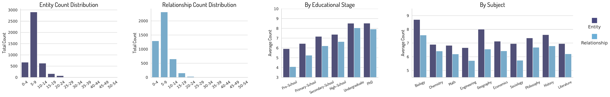
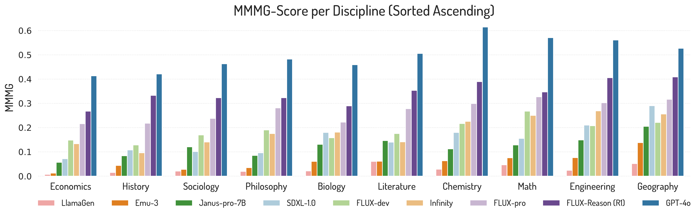
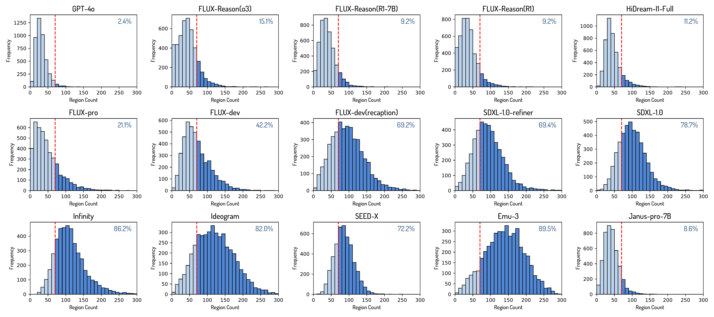
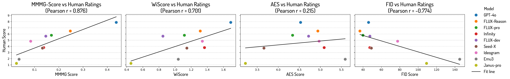
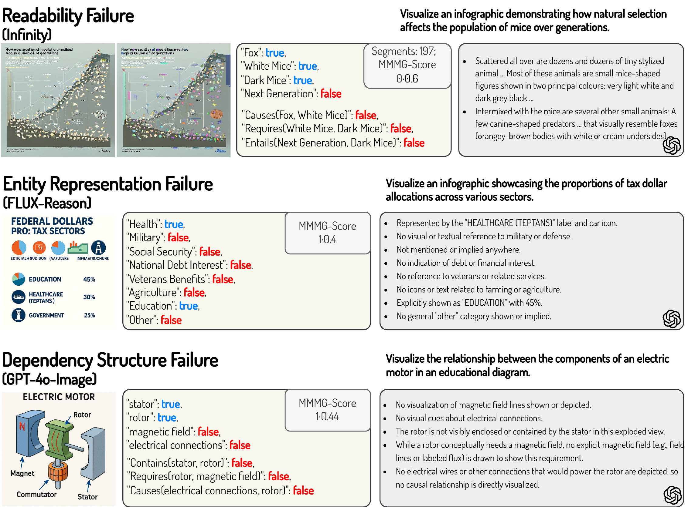

We propose MMMG: a Massive Multi-Discipline Multi-Tier Knowledge-Image Generation Benchmark. It consists of 10 disciplines and 6 educational levels, challenging models to demonstrate visual reasoning capabilities from concise text prompts.
Abstract
In this paper, we introduce knowledge image generation as a new task, alongside the Massive Multi-Discipline Multi-Tier Knowledge-Image Generation Benchmark (MMMG) to probe the reasoning capability of image generation models. Knowledge images have been central to human civilization and to the mechanisms of human learning a fact underscored by dual-coding theory and the picture-superiority effect. Generating such images is challenging, demanding multimodal reasoning that fuses world knowledge with pixel-level grounding into clear explanatory visuals. To enable comprehensive evaluation, MMMG offers 4,456 expert-validated (knowledge) image-prompt pairs spanning 10 disciplines, 6 educational levels, and diverse knowledge formats such as charts, diagrams, and mind maps. To eliminate confounding complexity during evaluation, we adopt a unified Knowledge Graph (KG) representation. Each KG explicitly delineates a target image's core entities and their dependencies. We further introduce MMMG-Score. This metric combines knowledge fidelity, measured by graph-edit distance between KGs, with visual clarity assessment. Comprehensive evaluations of 16 state-to-image generation models expose serious reasoning deficits-low entity fidelity, weak relations, and clutter-with GPT-4o achieving an MMMG-Score of only 50.20, underscoring the benchmark's difficulty. To spur further progress, we release FLUX-Reason (MMMG-Score of 34.45), an effective and open baseline that combines a reasoning LLM with diffusion models and is trained on 16,000 curated knowledge image-prompt pairs.
Leaderboard on MMMG 🏆
Below is the leaderboard for MMMG-Score (×100) across prevalent image generation models.
| Model | Resolution | Type | Preschool | Primary | Secondary | High | Undergrad | PhD | Avg |
|---|---|---|---|---|---|---|---|---|---|
| NanoBananaPro | Auto(1408×768) | MM | 64.43 | 52.36 | 56.01 | 54.73 | 42.02 | 42.07 | 51.94 |
| GPT-4o | 1024 | MM | 64.78 | 51.94 | 53.04 | 51.29 | 41.52 | 38.60 | 50.20 |
| NanoBanana | MM | 49.46 | 44.58 | 51.17 | 48.85 | 41.27 | 39.07 | 45.73 | |
| FLUX-Reason (R1) | 1024 | DM | 49.10 | 39.39 | 37.00 | 33.65 | 24.96 | 22.57 | 34.45 |
| FLUX-Reason (R1-7B) | 1024 | DM | 44.93 | 34.41 | 34.19 | 28.70 | 23.36 | 21.99 | 31.26 |
| HiDream-I1-Full | 1024 | DM | 42.86 | 31.77 | 30.26 | 23.39 | 19.88 | 20.05 | 28.04 |
| FLUX.1-[pro] | 1024 | DM | 42.27 | 30.10 | 29.15 | 23.40 | 19.32 | 18.61 | 27.14 |
| FLUX-Reason (o3) | 1024 | DM | 37.83 | 29.72 | 29.50 | 23.62 | 20.29 | 18.73 | 26.62 |
| Qwen-Image | 1024 | DM | 37.23 | 25.46 | 25.54 | 18.28 | 15.11 | 14.20 | 22.64 |
| Infinity | 1024 | AR | 25.87 | 20.63 | 21.86 | 18.36 | 14.23 | 14.14 | 19.18 |
| FLUX.1-[dev] | 1024 | DM | 29.80 | 23.09 | 20.99 | 16.12 | 12.47 | 12.30 | 19.13 |
| SEED-X | 1024 | MM | 33.41 | 22.67 | 19.49 | 15.74 | 8.88 | 8.76 | 18.16 |
| FLUX.1-[dev] (recaption) | 1024 | DM | 28.05 | 20.29 | 20.70 | 15.74 | 12.59 | 11.20 | 18.10 |
| SDXL-1.0-refiner | 1024 | DM | 24.55 | 19.24 | 18.59 | 16.72 | 9.68 | 8.94 | 16.29 |
| SDXL-1.0 | 1024 | DM | 23.41 | 19.12 | 17.41 | 16.26 | 9.92 | 9.29 | 15.90 |
| BAGEL | 1024 | MM | 29.29 | 19.42 | 15.29 | 11.11 | 7.40 | 7.60 | 15.02 |
| CogView-4 | 1024 | DM | 24.61 | 16.02 | 13.91 | 10.02 | 7.30 | 6.73 | 13.10 |
| Janus-pro-7B | 384 | AR | 29.50 | 16.72 | 12.73 | 8.45 | 5.57 | 5.66 | 13.10 |
| Ideogram | 1024 | DM | 20.39 | 14.14 | 12.90 | 9.68 | 8.41 | 7.73 | 12.21 |
| SimpleAR | 1024 | AR | 23.12 | 11.97 | 8.96 | 6.44 | 4.36 | 3.99 | 9.81 |
| JanusFlow-1.3B | 384 | AR | 24.11 | 12.72 | 8.81 | 5.56 | 3.57 | 3.82 | 9.77 |
| Emu-3 | 720 | MM | 12.44 | 7.12 | 6.41 | 5.28 | 2.65 | 2.74 | 6.11 |
| LlamaGen | 512 | AR | 8.24 | 3.77 | 2.44 | 1.44 | 1.08 | 1.14 | 3.02 |
Overview
MMMG-Statistics

We emphasize the inherent complexity of knowledge image generation by presenting detailed statistics on the number of entities and relationships in our dataset.
Nearly 3,000 samples require visualizing knowledge graphs with 5 to 10 entities and a similar range of relationships.
These distributions vary significantly across different disciplines and educational levels, highlighting the benchmark's diversity and the multifaceted nature of the generation task.
MMMG-Score
MMMG-Score is a novel and comprehensive metric designed for evaluating knowledge image generation. It consists of two components:
Knowledge Fidelity Score: a normalized graph edit distance that measures the structural alignment between predicted and ground-truth knowledge graphs (KGs).
Readability Score: a segmentation-based metric that rewards coherent visual regions and penalizes excessive fragmentation, promoting clarity in the generated content.
Reason-FLUX
Reason-FLUX is designed to enhance reasoning capabilities in knowledge image generation by integrating a large language model (LLM) with a diffusion-based generator.
Using GPT-4o, we construct a dataset of 16,000 training samples, each comprising a prompt, image, and structured knowledge graph (KG). The reasoning LLM generates chain-of-thought (CoT) traces based on the KG, guiding the image generation process with step-by-step semantic reasoning.
The diffusion model is trained to align with these CoT traces, enabling the production of images that are not only visually consistent but also semantically faithful to the underlying knowledge structure.
Results 📈
By Discipline

Model performance varies significantly across disciplines, reflecting domain-specific visual reasoning challenges.
Simpler domains like Geography and Literature benefit from descriptive visuals aligned with pretraining data, while fields like History and Sociology demand abstract reasoning with unfamiliar structures. Despite textual abstraction, Mathematics and Engineering perform well, aided by their structured, schematic visuals.
These results reveal semantic-visual gaps beyond the scope of text-only benchmarks.
Readability Statistics
Visual clutters can be quantified by excessive fragmentation, which lead to poor readability and make knowledge fidelity score prone to overestimation. Thus a combination of readability and knowledge fidelity improves the evaluation robustness.
Human Alignment and Metric Comparison

We benchmarked four evaluation metrics against expert annotations to assess alignment with human judgment. The proposed MMMG-Score reveals the strongest correlation ($r=0.876$), outperforming both LLM-based (WISE) and visual-only (FID, AES-2.5) metrics.
These results underscore the advantage of graph-based evaluation for structured knowledge images, capturing both semantic accuracy and visual clarity.
Error Analysis
We categorize failures into: Readability, Entity Representation and Dependency Structure. Top models achieve high clarity but struggle with abstract dependencies. With model capability drop, more entity omissions and ambiguous representations occur, leading to factual inaccuracies.
Visualization Examples 🖼️

Biology Visualization Example

Chemistry Visualization Example
Engineering Visualization Example
Math Visualization Example

Economics Visualization Example

Geography Visualization Example

Sociology Visualization Example

History Visualization Example

Literature Visualization Example

Philosophy Visualization Example
BibTeX 📚
@article{luo2025mmmg,
title={MMMG: A Massive, Multidisciplinary, Multi-Tier Generation Benchmark for Text-to-Image Reasoning},
author={Yuxuan Luo and Yuhui Yuan and Junwen Chen and Haonan Cai and Ziyi Yue and Yuwei Yang and Fatima Zohra Daha and Ji Li and Zhouhui Lian},
journal={arXiv preprint arXiv:2506.10963},
year={2025}
}